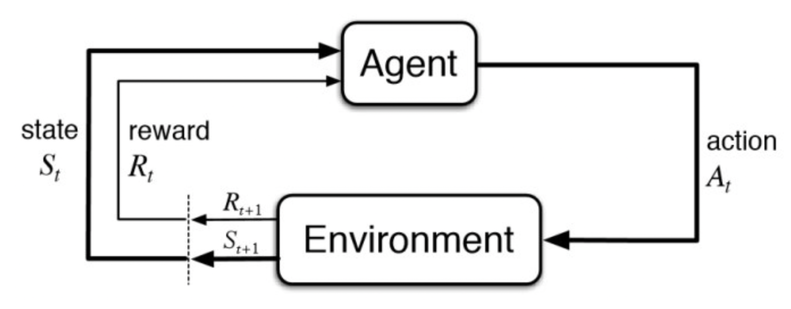
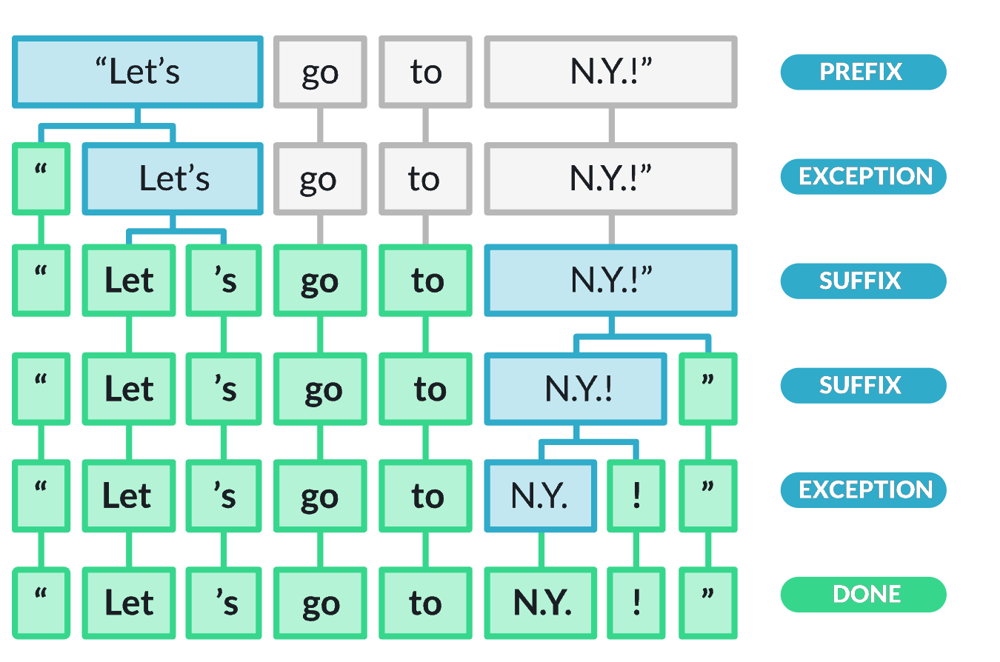
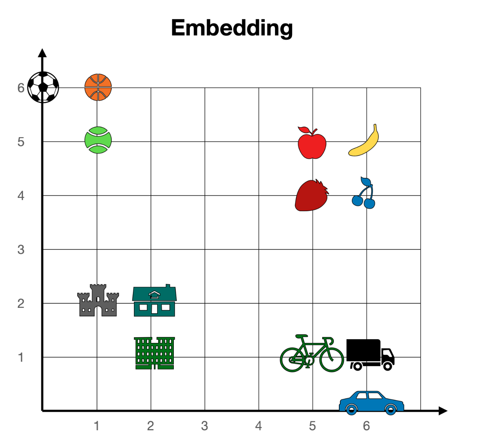
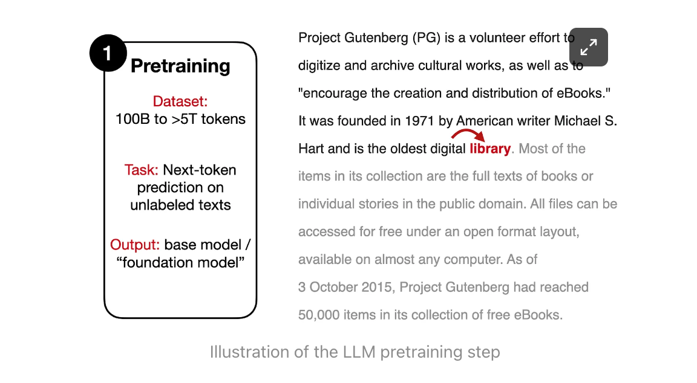
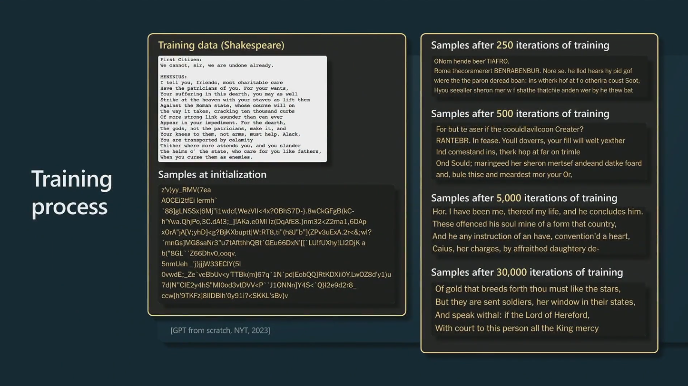
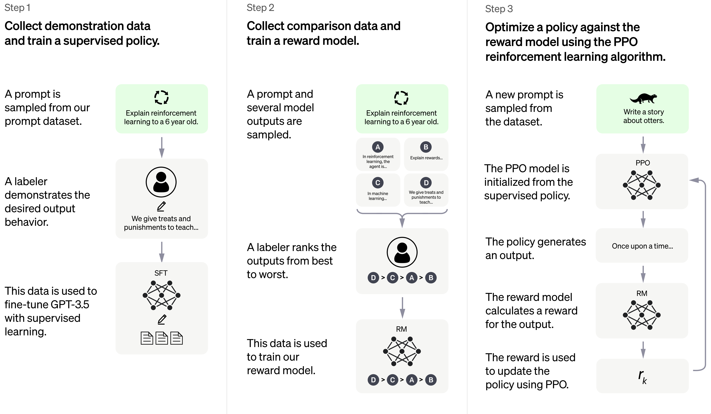

23 October, 2023
1 2 3 4 5 6
Complicated sentence
“The boy who was throwing stones at the birds, despite being warned by his parents not to harm any creatures, was chased by the angry flock.”
Who was chased?
the boy was chased) is separated from the subject by a long distance - you can’t just look at the previous few words to answer the question.was chased is linked directly to The boy without distraction by the words in between.Sentiment Analysis: Identifying emotions and opinions in text.
Machine Translation: Automatically translating between languages.
Question Answering: Providing direct answers to user questions.
Text Summarization: Generating concise summaries from long text.
Speech Recognition: Converting spoken words to text.
Speech Synthesis: Creating spoken words from text.
Natural Language Generation: Generating human-like text.
Natural Language Understanding: Extracting meaning from text.
Dialogue Systems: Conversing with humans using natural language.
The task of classifying text as positive, negative, or neutral.
I love this movie! → positive 😊This movie is ok. → neutral 😐This movie is terrible! → negative 😠Earlier, rule-based systems had to be programmed.
Machine learning (ML) models learn implicitly, i.e. without rules being programmed in.
Important terms:
We have to learn the bitter lesson that building in how we think we think does not work in the long run. We should stop trying to find simple ways to think about space, objects, multiple agents, or symmetries… instead we should build in only the meta-methods that can find and capture this arbitrary complexity. We want AI agents that can discover like we can, not which contain what we have discovered (Sutton 2019).
Classifiy pictures of cats and dogs: The goal of a model could be to discover which features distinguish cats from dogs.

1 2 3 4 5 6
ChatGPT is a particular kind of LLM and consists of two models:
Base model: GPT-3.5 oder GPT-4 (generative pre-trained transformer). This model is trained “simply” to predict the next word in a sequence of words. A base model produces text, but not human-like conversations.
Example
Give the input Once upon a time there was a, the model will predict which word is likely to follow.
Assistant model: This model is trained using reinforcement learning from human feedback to have human-like conversations.
Example
👩💼: Tell me a story!
💬: Once upon a time there was a ....
LLMs produce text by predicting the next word, one word at a time:
This is known as “auto-regressive next token prediction” (we’ll discover what tokens are in the next section).
The model predicts which token is likely to follow, given a sequence of tokens (words, punctuation, emojis, etc.).
Key idea: this simple procedure is followed over and over again, with each new token being added to the sequence of tokens that the model uses to predict the next token. \[ P(w_{w+1} | w_1, w_2, ..., w_t) \]
The sequence of words is called the context; the text generated by the model is dependent on the context.
The output of the model is a probability distribution over all possible tokens. The model then chooses one token from this distribution.
So far we have been talking about words, but LLMs operate with tokens. These are sub-words, and make working with text much easier for the model. A rule of thumb is that one token generally corresponds to ~4 characters of English text. This translates to roughly \(\frac{3}{4}\) of a word (so 100 tokens is about 75 words).
Feel free to try out the OpenAI tokenizer.

You can read more about embeddings in this tutorial.
1 2 3 4 5 6
Modern LLMs, such as ChatGPT, are trained in 3 steps:


Uses human feedback to rank the model’s responses. The goal is for the model to learn human preferences for responses.
Source: openai.com/blog/chatgpt
1 2 3 4 5 6
We can think of an LLM as a non-deterministic simulator capable of role-playing an infinity of characters, or, to put it another way, capable of stochastically generating an infinity of simulacra.
Source: Shanahan, McDonell, and Reynolds (2023)
This is very important when we try to understand why LLMs hallucinate, i.e. generate text that is not factually true.
1 2 3 4 5 6
OpenAI offer two ways to interact with their assistant model:
Now open the first activity to learn more about ChatGPT and OpenAI Playground: 👉 Activity 1.